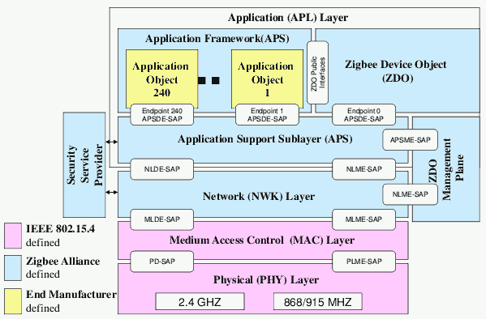
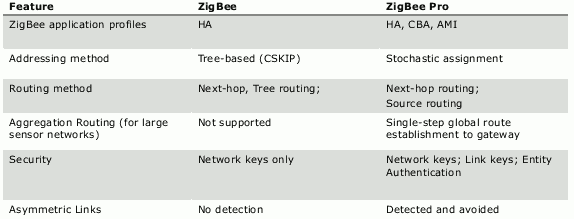
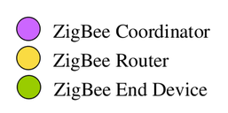
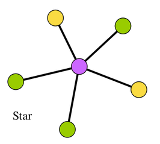
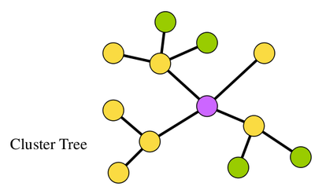
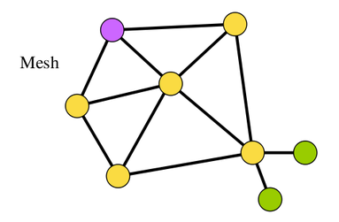
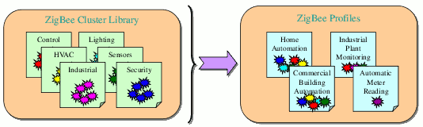
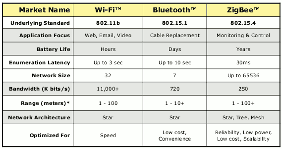

Torna alla pagina di Reti wireless
:: Reti wireless - Zigbee ::
Appunti del 13 e 16 Aprile
Le immagini di questa pagina sono prese dalle slide del prof Rapacioli
Introduzione
ZigBee è un protocollo di comunicazione di alto livello, basato sullo standard wireless IEEE 802.15.4. E' stato standardizzato principalmente per l'automazione e la sensoristica, quindi per soluzioni che prevedono la creazione di Wireless Personal Area Network (WPAN) a basso costo e a basso consumo e con un alto numero di nodi. La lunga autonomia dei dispositivi è legata al bassissimo data rate delle trasmissioni (da 20 a 250 Kb/s), che rimane comunque sufficiente per gestire i loro modesti volumi di traffico.
Prima di addentrarci nell'argomento, vediamo quali sono le principali applicazioni del protocollo:
- building automation (sistemi intelligenti di illuminazione, controllo avanzato del riscaldamento/condizionamento, ...);
- consumer electronics (per TV, lettori DVD/CD, ...) e PC & peripherals (per mouse, tastiere o joystick wireless, ...). Hanno poco senso perché ci sono già il Bluetooth e l'IrDA che funzionano benissimo;
- home control (rilevatori di fumo o incendi, elettrodomestici intelligenti, sistemi di sicurezza e di controllo degli accessi tramite badge o sistemi biometrici, ...);
- telecom services (monitoraggio e controllo dei servizi mobili, teleassistenza, ...);
- industrial control (controllo dei processi, gestione degli asset, gestione ambientale o energetica, ...);
- personal health care (ad esempio il monitoraggio dei parametri vitali dei pazienti). Queste due ultime applicazioni sono le più interessanti su cui investire (almeno per la società del prof Rapacioli).
Torna su
ZigBee Alliance
La ZigBee Alliance è un'organizzazione formatasi nel 2002 con l'obiettivo di sviluppare e promuovere il protocollo ZigBee (dal livello MAC in su).
L'utilizzo del protocollo per fini non commerciali è consentito a tutti (qui le specifiche http://www.zigbee.org/Products/DownloadZigBeeTechnicalDocuments.aspx), mentre se vuoi vendere prodotti col marchio ZigBee devi seguire una strada un po' più tortuosa. Prima di tutto devi iscriverti alla ZigBee Alliance (la sottoscrizione base costa 3500$ all'anno), che ti fornirà un id industriale per le tue soluzioni e ti schiuderà le porte dell'assistenza e delle specifiche più fighe ed utili. Per questo motivo quando dall'Alliance dicono che il protocollo è open, al nostro amico GNU gli girano le corna (la licenza GPL dice ben altro).
Ora che sei membro della ZigBee Alliance (come Adopter, Participant o Promoter), devi decidere che profilo dare alla tua applicazione, ovvero definire il ruolo e le funzioni dei dispositivi della tua rete ZigBee. Fondamentalmente puoi scegliere tra due tipi di profili:
- pubblico (standard): sviluppato e certificato dalla ZigBee Alliance per garantire l'interoperabilità tra dispositivi di diversi produttori. E' sufficiente essere iscritti per iniziare a sviluppare il tuo prodotto, a patto di inviare tutti i tuoi moduli e codici sorgenti. Ad esempio mantenere privato un protocollo per gestire l'accensione di una lampadina sarebbe folle, perché pochi produttori di lampadine si uniformerebbero al mio sistema e io avrei fatto un protocollo che non saprebbe usare nessuno;
- proprietario (privato): sviluppato dal produttore per applicazioni in cui l'interoperabilità non è un requisito. Bisogna pagare una certa somma per ogni modulo sviluppato, ed in cambio l'Alliance ti fornisce un id profiles univoco e la certificazione ZigBee, che garantisce la coesistenza del tuo prodotto con tutti gli altri.
Ci sono però due fregature: la prima è che ogni due mesi questi qua fanno uscire una versione nuova del protocollo, non necessariamente retrocompatibile, e se vuoi mantenere il marchio ZigBee sei costretto a ricertificarti (pagando di nuovo); la seconda è che se per il nostro prodotto dobbiamo utilizzare moduli certificati di terze parti, anche noi dovremo iscriverci alla ZigBee Alliance e ricertificarli!
Come alternativa alla certificazione (che dovrebbe costare sui 20-25mila euro per ogni modulo) si può commercializzare il proprio prodotto come comune protocollo wireless, rinunciando all'attestato di garanzia ZigBee.
Bei tempi quelli del Modbus, in cui dovevi limitarti a seguire le specifiche (pubbliche) del protocollo e vivere felice.
Se scegliamo di adottare un profilo pubblico per il nostro prodotto, possiamo scegliere tra i seguenti Application Profiles definiti dalla ZigBee Alliance, ognuno dei quali ha una propria chiave:
- Automated Metering Infrastructure (AMI), applications for two-way communications of metering data and energy management to provide more efficient and reliable energy usage;
- Home Automation (HA), applications for the residential automation market;
- Commercial Building Automation (CBA), applications targeted at a commercial building environment;
- Personal Home and Hospital Care (PHHC), used by all the devices which jointly cooperate to fulfil the requirements of a non-invasive health care application;
- Telecom Applications (TA);
- Wireless Sensor Application (WSA).
Torna su
Livello fisico
Il livello fisico è quello dello standard 802.15.4, che tra i vari compiti ha quello della gestione delle frequenze di utilizzo. Dal momento che queste cambiano a seconda dell'area geografica in cui ci si trova, bisognerà settare opportunamente il parametro Country del modulo ZigBee. Le frequenze utilizzate nel mondo sono fondamentalmente tre:
- 868.3 MHz, per l'Europa;
- 902-928 MHz, per l'America (915 MHz negli Stati Uniti);
- 2405-2480 MHz, per tutte le terre emerse, le precedenti comprese. E' il più performante sia in termini di larghezza di banda (max 250 Kb/s) che di numero di canali utilizzabili (max 16). Il fatto che in Europa si possa utilizzare per lo ZigBee anche questa banda di frequenze si rivela però spesso un'arma a doppio taglio, perché va a sovrapporsi con la banda di trasmissione Wi-Fi, con cui possono esserci interferenze (anche se loro dicono di no http://www.zigbee.org/About/FAQ.aspx#21).
Il rapporto segnale rumore (potenza segnale / potenza rumore nel segnale) è un parametro che dà una stima sulla bontà del segnale: se è molto basso avrò percentuali di fallimento delle trasmissioni trascurabili. Lo ZigBee trasmette usando il metodo CDMA, che oltre a permettere l'invio in contemporanea da diversi trasmettitori senza provocare collisioni, ha valori più bassi di rapporto segnale rumore (quindi robustezza maggiore) rispetto a Wi-Fi e Bluetooth.
Torna su
Livello datalink
Dello standard 802.15.4, lo ZigBee eredita le specifiche anche della parte del livello datalink del Medium Access Control (MAC), che fa da tramite tra il livello fisico (che gestisce le potenze e le modalità di connessione-trasmissione della rete) e quello applicativo (che dice cosa posso fare col protocollo). In altre parole il MAC si occupa di rendere il livello applicativo del tutto trasparente alla tecnologia che c'è sotto, sollevandolo da ogni preoccupazione sul tipo di connessione che sto utilizzando (wireless o cablata che sia).
Il protocollo MAC supporta fondamentalmente due tipi di rete:
- beacon-enabled. Lo ZigBee è strutturato in modo da avere un nodo coordinatore e vari altri nodi slave che comunicano con esso e solo con esso. Il beacon è un pacchetto che il modulo master manda a turno a tutti gli slave per dirgli: "io ci sono, se vuoi puoi trasmettermi qualcosa". Se effettivamente qualcuno gli trasmette qualcosa, gestisce la risposta e passa al prossimo. Il beacon è mandato in polling su tutta la rete ogni tot tempo (dai 15,36 millisecondi ai 768,432 secondi), passati i quali il master va in sleep-mode; i consumi di energia si riducono anche per i nodi slave, perché si attivano solo quando ricevono un beacon, quindi per la maggior parte del tempo sono spenti. Questa modalità di funzionamento della rete è più dinamica ma anche più complessa, ed è spesso utilizzata per implementare le reti mesh;
- non beacon-enabled, definita anche rete attiva. Non mandando beacon, il coordinatore deve rimanere sempre attivo, così da permettere agli slave di comunicare in qualsiasi momento e senza perdere nessun dato. Le conseguenze pratiche sono due: la prima è che l'autonomia del master si riduce drasticamente, e infatti spesso è alimentato; la seconda è che va adottato un meccanismo di accesso al canale di tipo CSMA/CA, quindi con una strategia collision avoidance, per evitare appunto collisioni nelle trasmissioni. Avremo quindi alcuni dispositivi sempre accesi e pronti a ricevere, ed altri che trasmettono solo in presenza di uno stimolo esterno. Ricapitolando, la modalità non beacon-enabled consuma più batteria, è più statica, ma permette agli slave di comunicare in qualsiasi momento ed è molto più semplice da realizzare.
I frame aggiunti al pacchetto dal livello MAC possono essere di quattro tipi: beacon, data, ack (il comune acknowledgement, che dà garanzie sulla ricezione dei dati) e command (per inviare comandi di gestione). Quest'ultimo è mantenuto separato dal frame dei dati così da favorire l'utilizzo da parte di sviluppatori diversi da quelli originari, perché più facilmente individuabile e documentabile.
Torna su
ZigBee Stack Architecture
Sui due livelli visti finora si appoggia lo Stack ZigBee vero e proprio. Vediamo lo schema complessivo dell'architettura:

La parte in rosa è quella dell'802.15.4, quindi livello fisico e MAC. Si noti che attraverso la configurazione di alcuni parametri è possibile intervenire sui consumi dei moduli. Ad esempio si può aumentare l'autonomia dei device abbassando la potenza di uscita (riducendo di conseguenza il range della rete), o diminuendo la frequenza di invio dei beacon.
La parte in giallo è quella applicativa scritta dal produttore.
La parte in azzurro è quella definita dalla ZigBee Alliance. Vediamo i vari livelli:
- network, il livello più passo, che può essere paragonato al livello delle direttive ("creami una rete con questi parametri"). Il suo compito è infatti quello di gestire in automatico le direttive applicative col livello MAC (a cui è direttamente interfacciato) e quello fisico, di gestire le connessioni della rete, la sua sicurezza e la sua creazione. Si occupa inoltre del routing dei messaggi e della route discovery & maintenance. Il network è il primo livello in cui vengono aggiunti header e footer al pacchetto per la sua gestione, così da renderlo comprensibile e gestibile dai livelli sottostanti della pila OSI;
- SSP (Security Service Provider), è il modulo che si occupa della sicurezza del protocollo, un elemento di novità rispetto al Bluetooth o all'IrDA. Si noti che l'SSP non è direttamente collegata agli altri moduli, ma prevede uno scambio di messaggi tra il livello network e quello applicativo; questa scelta progettuale fa sì che l'intero modulo sia facilmente bypassabile nel caso in cui non sia richiesta la sicurezza del protocollo. Tra le funzionalità principali offerte dall'SSP citiamo: gestione della chiave WEP (e nei nuovi standard ZigBee anche WPA e WPA2); crittazione dei dati; anti-replay attack, che impedisce che un modulo possa essere bloccato da un invio incessante di dati (se arrivano richieste molto ravvicinate dallo stesso dispositivo, possiamo decidere se tollerarle o scartarle o inibire il device petulante o malevolo); gestione dei trust center, dispositivi fidati per la distribuzione delle chiavi di sicurezza;
- ZDO (Zigbee Device Object), in cui vengono salvati tutti i dati di configurazione del dispositivo e della rete, così che quando io slave voglio collegarmi ad essa potrò richiedere le informazioni di questo modulo per sapere tutto ciò che serve per entrare nel giro. Spieghiamo meglio un concetto: ogni device è definito da un profilo ed è implementato come application object; ogni application object è collegato al resto dello stack ZigBee attraverso un endpoint (un componente indirizzabile all'interno del dispositivo). La comunicazione avviene da endpoint a endpoint, e all'interno della rete ne esistono due speciali: 0, usato per la configurazione e la gestione dell'intero dispositivo ZigBee; 255, per la comunicazione in broadcasting;
- APS (Application Support Sub-layer), che mantiene le tabelle per fare il binding ed inoltra i messaggi tra gli endpoint. I suoi servizi sono usati sia dal modulo ZDO che dall'Application Framework;
- AF (Application Framework), in cui si trovano gli oggetti proprietari scritti dagli sviluppatori privati. E' gestito dall'interfaccia pubblica dello ZDO.
Concludendo, lo stack ZigBee ha tre tipi di profili:
- Profilo 0: è quello privato, che può essere usato per qualsiasi uso e che non offre l'interoperabilità con altre reti ZigBee;
- Profilo 1: lo standard ZigBee Stack Profile;
- Profilo 2: lo ZigBee Pro Stack Profile, basato sullo stack della versione del 2007, a cui sono state aggiunte molte funzioni sulla sicurezza più altre finezze mostrate nella tabella sotto:

Torna su
Tipi di dispositivo
Da un punto di vista logico, i dispositivi ZigBee possono essere di tre tipi: Coordinatore, Router ed End Device.
ZigBee Coordinator
Lo ZigBee Coordinator (ZC) è il dispositivo che crea e configura la rete, cercando un canale radio adatto e definendo tra i parametri operativi il PAN ID, cioè il numero a 16bit usato dai membri della rete per riferirsi ad essa. Una volta avviata la rete si mette in modalità Coordinatore, permettendo (o meno) a Router ed End Device di fare una join alla sua rete. Tra le altre funzioni, agisce come deposito per le chiavi di sicurezza (trust center), ed occasionalmente effettua attività di routing.
Lo ZC è unico per ogni rete, ne costituisce la radice e può fare da ponte tra più reti diverse. E' chiaramente un full function device, e dato che non può andare in modalità sleep per ottemperare ai suoi mille doveri, deve essere alimentato da rete elettrica.
ZigBee Router
Lo ZigBee Router (ZR) permette l'inoltro dei messaggi (aumentando così le distanze di copertura della rete) e ha il potere di accettare o meno richieste di join alla rete da parte di altri device. Ovviamente prima si dovrà unire a una rete già esistente, chiedendo l'autorizzazione al Coordinator o a un altro Router. L'inoltro dei messaggi avviene attraverso il mantenimento di tabelle di routing dinamiche e sempre aggiornate, in cui lo ZR può memorizzare fino a 20 percorsi diversi.
Per ogni rete può esserci più di un Router, che però essendo un full function device deve essere alimentato da rete elettrica (uno ZR in frequente sleep mode serve a poco).
ZigBee End Device
Lo ZigBee End Device (ZED) è un reduced function device, perché le sue funzionalità si riducono al dialogare col Coordinatore o col Router (non può trasmettere/ricevere dati a/da altri ZED). Richiede poca memoria, ha bassi consumi (va a batterie) e costi inferiori rispetto agli altri due tipi di dispositivi.
Al contrario di ZC e ZR, la loro presenza in una rete ZigBee non è essenziale: si possono benissimo realizzare reti con solo un Coordinatore e uno o più Router (caso tipico: supervisione di macchine industriali, in cui è richiesta massima efficienza e reattività).
Torna su
Topologie della rete Zigbee
La rete ZigBee può assumere 3 diverse topologie, ognuna con i suoi pregi e difetti. Ecco una semplice legenda per gli schemi che seguiranno:

Alcuni dettagli numerici prima di cominciare:
- la massima distanza Router-Router o Coordinatore-Router è 6;
- ad ogni ZR o ZC possono essere associati un massimo di 20 dispositivi, di cui al massimo 6 possono essere Router;
- facendosi due conti, si può facilmente dedurre che il numero di dispositivi che compongono la rete possono superare di gran lunga le 65000 unità.
Topologia a stella
La topologia a stella è la topologia più semplice in quanto ogni dispositivo (Router o Device) è collegato direttamente al Coordinator.

Questa topologia è indicata per reti con pochi slave, o la sua gestione diventerebbe troppo complessa e il coordinatore sarebbe sommerso da richieste di instradamento. Presuppone inoltre la non dinamicità della rete, dato che si instaurano collegamenti univoci tra i vari ZED e lo ZC.
La topologia a stella non richiede alcun algoritmo di routing in quanto si passa sempre dal coordinatore.
Topologia ad albero
Questa rete assume le sembianze di un albero radicato nel Coordinator.

Per comunicare tra loro i device fanno risalire le richieste lungo l'albero, fino a trovare un router che abbia come figlio (o discendente) il device con cui si vuole comunicare.
Anche questa topologia non necessita di algoritmi di routing specifici, in quanto si invia il messaggio al padre, unico per ogni dispositivo. Tuttavia è poco affidabile, perché se cade uno dei Router della rete, tutta la sua sottorete sarebbe esclusa dalla comunicazione e dovrebbe ripetere l'operazione di inserimento.
Topologia Mesh
Questa è la rete che permette la dinamicità maggiore ed è indicata per reti di grosse dimensioni.

Permettendo il collegamento diretto tra molti Router, la rete consente di migliorare l'invio di messaggi tra dispositivi, in quanto è possibile scegliere tra differenti strade in base al loro carico, alla distanza e ad altri fattori.
La rete è inoltre più affidabile: se un Router cade non cade tutta la sua sottorete, ma entrano in gioco algoritmi di re-routing che si accorgono della mancanza di un nodo e ricalcolano il percorso migliore per portare a destinazione il messaggio. Questo rende però necessari algoritmi di routing specifici.
Torna su
Join in una rete
Esistono due modi in cui un dispositivo si unisce ad una rete Zigbee:
- richiedendo la connessione ad un dispositivo noto
- richiedendo la connessione ad un qualunque dispositivo
Nel primo caso il Router o Device che si unisce alla rete conosce già l'ID del dispositivo a cui chiedere la connessione (ad esempio può essere impostato fisicamente).
Nel secondo caso invece il dispositivo deve ricercare un Router o un Coordinator che gli risponda. Tra i dispositivi che rispondono ne viene scelto uno al quale si richiede la connessione. Se la connessione va a buon fine, il dispositivo che ha chiesto la join riceve il suo indirizzo dal Router con il quale si è collegato.
Torna su
Cluster
Dalle FAQ del protocollo: The ZigBee Cluster Library (ZCL) is a significant addition to revision 1.1. In ZigBee, a cluster is a message or collection of messages pertaining to a given application domain. Some devices (such as on/off switches) have the same definition and functionality whatever application profile is used. The idea behind creating the ZCL was to provide cluster reusability by abstracting clusters across several application domains and placing them in a library organized according to functional domains (e.g., lighting, closures, HVAC).

Torna su
Comparative
Vediamo ora le principali differenze tra ZigBee, Wi-Fi e Bluetooth attraverso la seguente tabella:

Qualche commento ulteriore sullo ZigBee. Anzitutto la durata delle batterie dipende dal tipo delle batterie stesse: per le normali stilo si parla di anni, mentre per quelle al litio più avanzate si parla tranquillamente di decenni. La dimensione della rete intesa come numero di nodi collegabili è sovradimensionata in modo imbarazzante rispetto alla quasi totalità delle applicazioni. E' supportata l'architettura di rete mesh, che permette l'autocostruzione della rete stessa: il device ne chiede la struttura al coordinatore e vi si adatta. Mentre per rimpiazzare un modulo Bluetooth dovrò rifare l'aggancio al dispositivo, la sostituzione di un modulo ZigBee avviene automaticamente nel modo corretto, perché è tutto demandato a livello applicativo (e non fisico o network come negli altri protocolli).
Lo ZigBee cerca quindi di prendere sia i pregi della Wi-Fi che quelli del Bluetooth.
Torna su
Torna alla pagina di Reti wireless